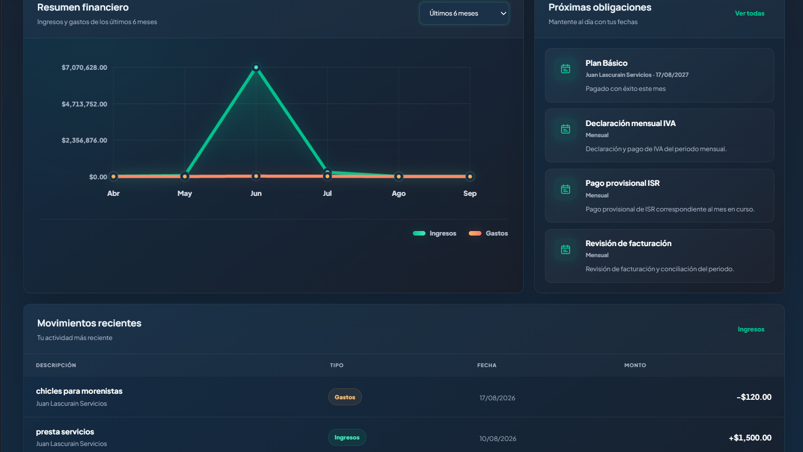

01 / FINTECHProyecto propio · Demo disponible · 93% del desarrollo
Fiscalix
En líneaCentro de control fiscal y financiero para empresas: ingresos, gastos, nómina, impuestos, reportes, planes y soporte en un mismo producto.
Resultado: una vista centralizada para tomar decisiones sobre la operación fiscal y financiera.
Acceso sandbox: juan@lasc.com · Contraseña: 12345678
Todos los datos de esta cuenta son ficticios. Los datos se actualizan a diario. Para apreciar mejor los datos y las fórmulas, selecciona meses anteriores; todavía no se han insertado nuevos datos de muestra.